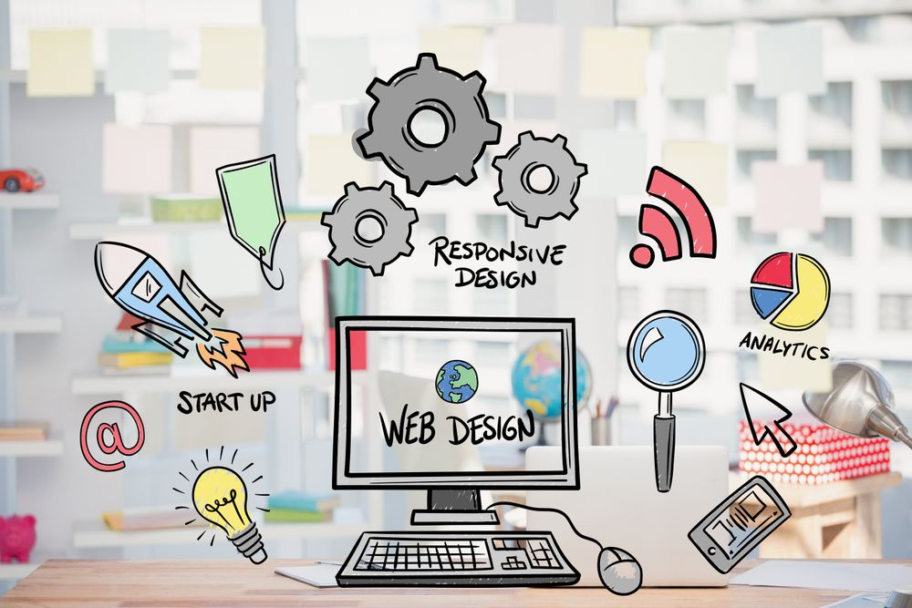

The Evolution of Web Design
The evolution of web design has been a fascinating journey, transforming from simple, static pages to dynamic, interactive experiences that we rely on daily. In the early days of the internet, websites were basic and text-heavy, often lacking visual appeal and functionality. However, with the advancement of technologies like HTML, CSS, and C# web design began to evolve, introducing better layouts, animations, and user-friendly interfaces. The rise of responsive design further revolutionized web development, ensuring that websites look and function seamlessly across all devices, from desktops to smartphones. Today, web design continues to push the boundaries with innovations in UX/UI design, progressive web apps, and AI-driven interactions, offering more personalized and immersive experiences for users.
Read More...The rise of IT employeess

The direct result of the rapid growth of technology in nearly every part of society. As businesses and organizations increasingly rely on digital tools, software, and data, the demand for skilled IT professionals has surged. From web developers to cybersecurity experts, IT employees are now at the heart of maintaining systems, improving operations, and driving innovation. The rise of cloud computing, data analytics, and artificial intelligence has only expanded the need for specialized expertise in these fields. Today, IT professionals are not just problem-solvers but also key players in shaping the future of technology and business strategies across the globe.
Read More...Toyota best selling pick-up truck
The Toyota Hilux Conquest V 4x4 stands as a powerful and versatile pickup truck, combining rugged off-road capabilities with modern luxury features. Designed for adventure-seekers and hard workers alike, this vehicle offers a robust 2.8-liter turbocharged engine that delivers impressive power and torque, making it ideal for towing, hauling, and conquering tough terrains. Equipped with a 4x4 drivetrain, the Hilux Conquest V ensures excellent handling and stability, whether you’re navigating rocky trails or cruising on the highway. Inside, it boasts a comfortable and tech-savvy cabin, featuring premium upholstery, a touchscreen infotainment system, and advanced safety features like Toyota Safety Sense. With its blend of durability, performance, and comfort, the Hilux Conquest V 4x4 is the ultimate companion for both work and play.
Read More...Is Coding Hard? Breaking Down the Myths and Realitiess
When it comes to learning how to code, many people are intimidated by the idea, assuming it’s a difficult and complex skill to master. But the truth is, coding isn’t inherently hard—it just requires patience, persistence, and the right approach. Like learning any new skill, coding takes time to understand, and everyone starts as a beginner. While there are challenges along the way, the key is to break coding down into smaller, manageable steps, focusing on one concept at a time. With the abundance of online resources, coding tutorials, and communities offering support, it’s easier than ever to get started, making coding accessible to anyone with the willingness to learn.
Read More...Adamson University Stuck in the Top 5 or Ready to Break and rise to the Big 4

For years, Adamson University has firmly established itself as one of the top contenders in the Philippines' higher education scene, consistently ranking in the top 5 among universities. But the question on many minds is whether Adamson has what it takes to rise above its current position and crack into the prestigious Big 4—the elite group of universities that dominate the nation’s academic and athletic landscapes. With a strong emphasis on academic excellence, innovative programs, and a growing presence in collegiate sports, Adamson has shown signs of readiness to challenge the status quo. However, the journey to joining the Big 4 isn’t an easy one, and the university will need to continue investing in its infrastructure, faculty, and research to elevate its national standing. As competition heats up, all eyes are on Adamson to see if it will continue to rise and carve out a bigger role in the country’s top-tier universities.
Read More...